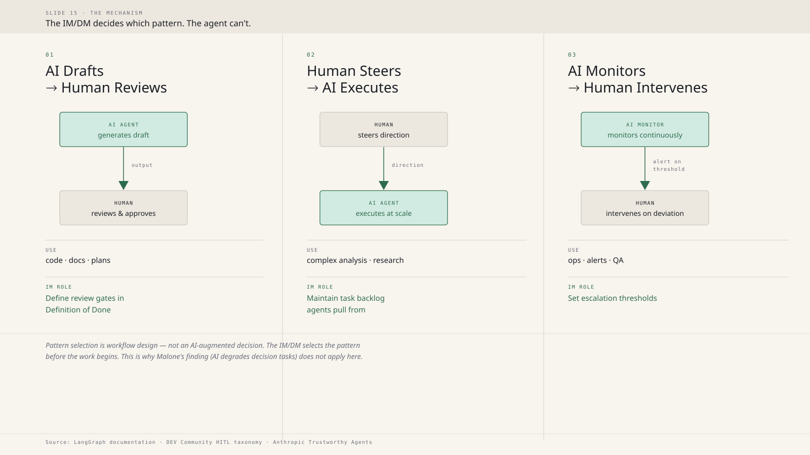
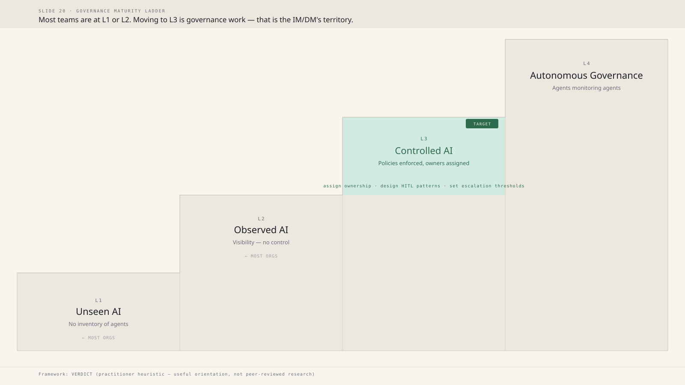
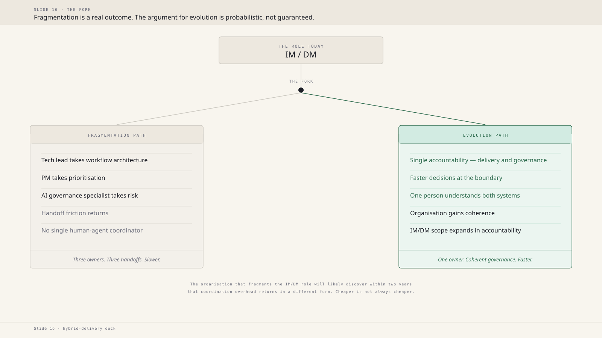
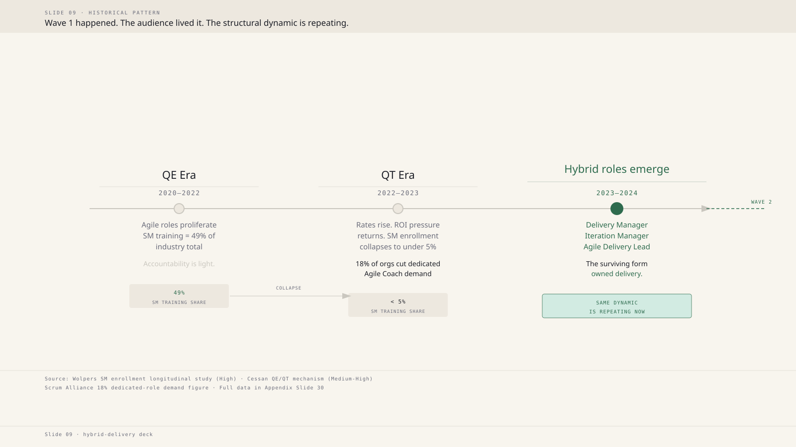
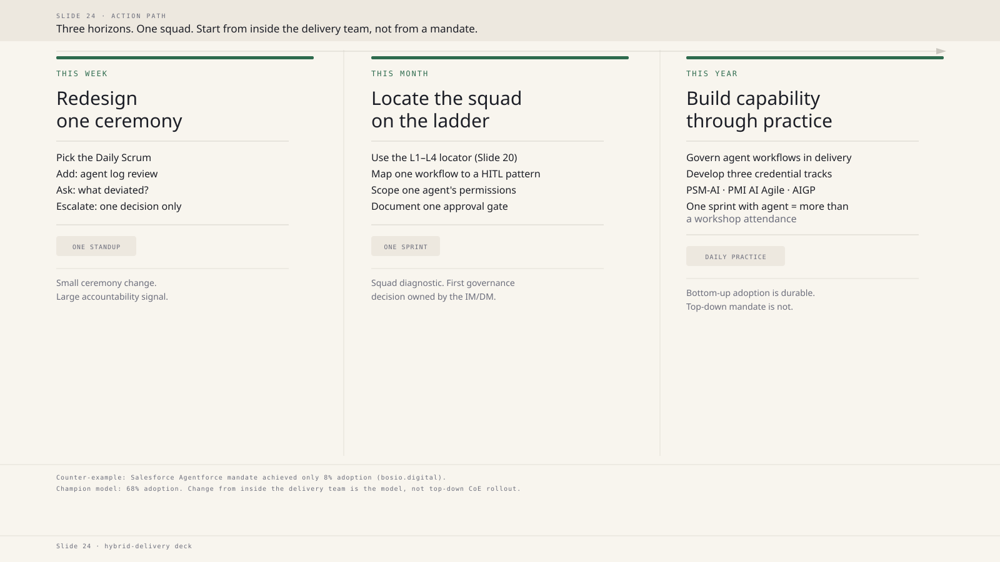

SLIDE 15 · The Mechanism · HITL Patterns
Three HITL patterns as vertical flows. Each column: actor A → (action) → actor B, plus Use and IM Role annotations.
This is the argument peak slide — the mechanism that earns the "IM/DM as natural locus" claim.
High-value candidate: replaces or supplements the numbered text list.

SLIDE 20 · Governance Maturity · Maturity Ladder
L1→L4 staircase ascending left-to-right. L3 (Controlled AI) highlighted in jade as the target.
"Most orgs here" bracket spans L1–L2. L2→L3 transition label names the IM/DM work.
Replaces the flat text-list .ladder CSS element.

SLIDE 16 · The Fork · Evolution vs Fragmentation
Y-fork from single starting node. Left path: Fragmentation (neutral, text on surface background).
Right path: Evolution (jade highlight). Replaces two-column compare panel.
The Y-fork structure makes the "choice point" viscerally clear.

SLIDE 09 · Historical Pattern · Timeline
Horizontal timeline with 3 nodes: QE Era (2020–2022) → QT Era (2022–2023) → Hybrid roles (2023–2024).
Stat callouts (49% → <5%) with collapse arrow. Node 3 in jade as the surviving form.
CSS already has a .timeline-track — this is the Excalidraw-style alternative. Compare against in-browser
rendering to decide which is stronger.

SLIDE 24 · Action Path · Three Horizons
Three columns with jade accent bars at top: This Week / This Month / This Year.
Progress track connects the three horizon nodes. Counter-example note (Salesforce 8% mandate failure)
in the source note below. Reinforces the "inside the team, not from a mandate" framing.

SLIDE 14 · The Structural Model · AI-Generated Image (Centaur / Chess)
Image brief in progress (Iris → Mack). Editorial black-and-white: chess board + human hand + computational element.
NYRB / Magnum Photos aesthetic. No faces, no colour. Monochrome to match Ivory Ledger theme.
Will appear here once generated.